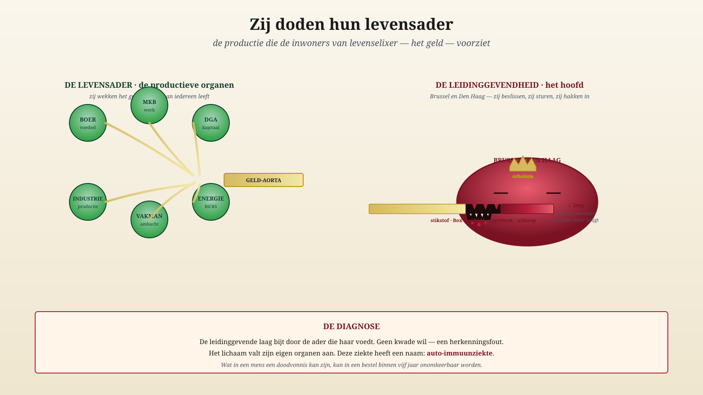
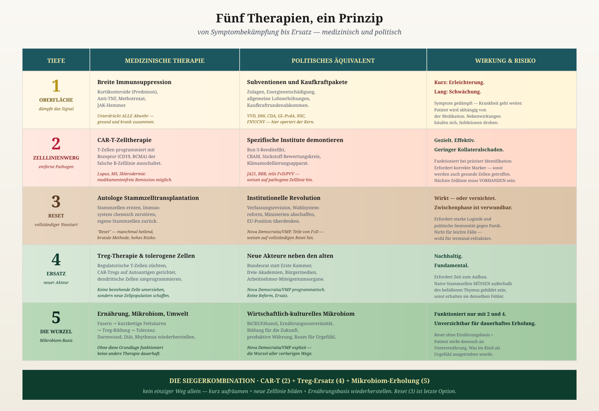
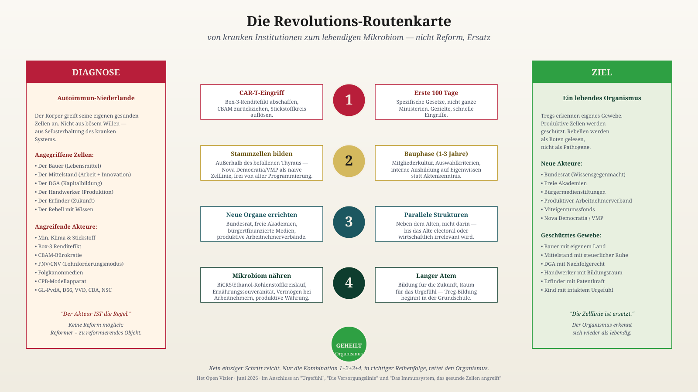

Sie töten ihre Lebensader
Brüssel und Den Haag haben eine Autoimmunkrankheit. Der Patient heißt Niederlande.
Jacobus van Merksteijn · 19. Juni 2026
Sie töten ihre Lebensader — die Produktion, die den Bürger mit Geld versorgt.
Keine Rhetorik. Drei Meldungen aus dieser Woche.
15. Juni 2026
Niederländische Ställe werden abgerissen und in Polen, Schweden, Kroatien, Peru und der Ukraine neu aufgebaut. Gerade die jungen Ställe verlassen das Land. Sie sind am wertvollsten.
16. Juni 2026
ESB rechnet vor: Die Stickstoff-Aufkaufpolitik kostet €212.795 pro Kilogramm Stickstoff. Ein Kilogramm Stickstoff im Kraftfutter kostet €1,50. Das Programm ist 140.000 Mal teurer als das Problem.
12. Juni 2026
Rabobank: Mehrwert Landwirtschaft –20% in einem Jahr. Kunstdünger +26%. Energie +17%. Wer bleibt, zahlt mehr für weniger.
Eine Woche. Drei Sektoren desselben Opfers.
Und der Bauer ist nicht allein. GGF: Betriebsnachfolge bis zu 70% besteuert. Box 3: Steuer auf Gewinn, der nicht existiert. Industrie: CBAM vertreibt Tata, Nyrstar und die Chemiebranche. Handwerker: Regulierungsdruck und Mehrwertsteuer zerstören das KMU. Brüssel: genehmigt mehr Aufkäufe, blockiert Zuchtfleisch, drückt CBAM durch.
Eine Führung. Sechs Sektoren. Ein Muster.
Der Bürger hat eine Lebensader: die Produktion. Dort kommt das Geld her für Gesundheit, Bildung, Verteidigung, Rente. Keine Produktion, kein Geld, keine Gesellschaft. Rechnung.
Diese Ader wird nun durchtrennt von der Führung, die davon lebt.
Und wofür? Für Ziele aus dem Jahr 2019, im Klima von 2026. Die Pflanzen sind bereits weggezogen. Die Baumgrenze verschiebt sich nordwärts. Die Natur bewegt sich mit. Die Führung nicht. Sie kauft Bauern auf der Grundlage von Rechenmodellen auf, die die Wirklichkeit längst überholt hat. Das ist keine Sturheit. Das ist das Krankheitsbild.
Warum denkt niemand?
Wie ist das möglich? Ausgebildete Menschen. Berater. Modelle. Und dennoch das hier.
Wirkliches Denken erfordert drei Dinge.
Wahrnehmen, was ist. Die kranke Führung sieht nur ihre eigenen Modelle.
Die eigenen Annahmen hinterfragen. In der kranken Führung ist Zweifel Verrat.
Verantwortung übernehmen. In der kranken Führung liegt Verantwortung nirgends — es kam aus dem Modell, stand in der Richtlinie, war europäisch vorgeschrieben.
Wer nicht wahrnimmt, zweifelt nicht. Wer nicht zweifelt, entscheidet nicht. Wer nicht entscheidet, denkt nicht.
Deshalb nützen Appelle für „bessere Politik" nichts. Ein nicht-denkendes System denkt nicht besser, weil man es darum bittet.
Die Krankheit hat einen Namen
In der Medizin kennen wir das. Autoimmunkrankheit. Der Körper greift seine eigenen Organe an. Bauchspeicheldrüse, Gelenke, Myelin, Schilddrüse, Darm.
Die angreifenden Zellen sind nicht bösartig. Sie tun ihre Arbeit. Das Problem liegt in der Erkennung. Eigenes Gewebe wird für Feind gehalten.
Das Immunsystem kann seinen eigenen Fehler nicht sehen. Jeder Korrekturversuch wird als Bedrohung behandelt und neutralisiert.
Lesen Sie diese Beschreibung noch einmal. Ersetzen Sie „Körper" durch „Niederlande". Ersetzen Sie „Immunsystem" durch „Brüssel und Den Haag". Es passt Wort für Wort.
Das ist keine Metapher.
Das ist ein klinisches Krankheitsbild.
Unbehandelt führt es zum Tod — beim Menschen innerhalb von Jahren, bei einem Land innerhalb eines Jahrzehnts.
Warum ein neuer Minister nichts löst
Die Zelllinie ist krank, nicht die einzelne Zelle.
Ein neuer Minister kommt von derselben Universität, derselben Laufbahn, denselben Modellen, denselben Kommissionen. Er kann gar nicht anders, als dieselben Entscheidungen zu treffen. Das Ministerium produziert sie, nicht er.
In der Medizin hat man das längst gelernt: breite Immunsuppression — die Symptome dämpfen — macht den Patienten schwach und abhängig. Heilung erfordert etwas anderes.
Die Zelllinie entfernen und eine neue bilden.

Fünf aufsteigende Behandlungsrouten — medizinisch und politisch nebeneinander.
Die Behandlung
Fünf medizinische Routen. Fünf politische Übersetzungen.
1 · Symptome dämpfen
Subventionen, Zulagen, Kaufkraftpakete. Verlängert die Krankheit. Macht den Patienten abhängig vom Angreifer. Nicht tun.
2 · Spezifische Institute entfernen
Wie CAR-T die falsche B-Zelllinie tötet. Konkret, diese Woche:
- Lbv-Aufkauf: stoppen.
- Box-3-Fiktion: abschaffen.
- CBAM: zurückziehen.
- BOR-Verschärfung: rückgängig machen.
- AERIUS: neu beginnen, andere Ausgangspunkte.
Fünf Entscheidungen. Hundert Tage. Nicht verhandelbar.
3 · Vollständiger Reset
Grundgesetz, Wahlsystem, Ministerien auflösen. Funktioniert — oder vernichtet. Nur wenn Route 2 und 4 verweigert werden. Als letzte Reserve.
4 · Neue Organe neben den alten
Nicht die FNV reformieren — eine produktive Arbeitnehmerbewegung daneben gründen. Nicht das CPB überreden — ein Büro für Produktive Zukunft errichten, das BiCRS tatsächlich durchrechnet. Nicht die NOS pluralisieren — Bürgerstiftungen für Medien. Nicht die Erste Kammer anpassen — einen Bundesrat, in dem Bauern, KMU, Handwerker und Erfinder Sitz und Stimme haben.
Aufbau neben Abbau. Das Alte wird von selbst irrelevant.
5 · Die Versorgungsbasis
Eigene Energie über BiCRS. Eigene Lebensmittel. Produktive Währung. Vermögen bei Arbeitnehmern und KMU. Ohne dies hält nichts an.
Das Rezept
- Route 2 + 4 + 5. Kombination. In dieser Reihenfolge. Schnell.
- Route 1 bewusst abbauen. Wer den Patienten abhängig macht, nährt die Krankheit.
- Route 3 in Reserve. Nur wenn der Patient 2 und 4 aktiv verweigert.

Von der Diagnose zum Ziel — vier Schritte, nicht mehr.
Was, wenn wir nichts tun
Der Krankheitsverlauf ist dokumentiert. Andere Länder haben ihn bereits durchlaufen.
Produktive Menschen verlassen das Land. Grundorgane fallen aus. Wartelisten im Gesundheitswesen wachsen. Die Verteidigung kann sich selbst nicht finanzieren. Das Kapital folgt den Bauern nach Polen.
Zehn Jahre. Dann ist Genesung nicht mehr möglich.
An Sie
Die Führung wird sich nicht selbst heilen. Ein Autoimmunsystem erkennt seinen eigenen Fehler nicht.
Sie schon.
Sie sind der Bauer, dessen Stall nach Polen verschwindet. Der GGF, dessen Betriebsnachfolge unbezahlbar gemacht wurde. Der KMU-Inhaber, dessen Rechnung explodiert. Der Arbeitnehmer, dessen Lohn schrumpft.
Sie sind auch die gesunde Gegenkraft. Die Treg-Zelle, die die Genesung tragen kann. Aber nur, wenn Sie sich erheben.
Erkennen Sie die Krankheit. Benennen Sie sie. Fordern Sie die Behandlung. Warten Sie nicht auf den Patienten.
Sie töten ihre Lebensader.
Wer diesen Satz liest und denkt „es wird schon nicht so schlimm sein" — der ist bereits mit der Krankheit mitgegangen.
Wer liest und weiß, was zu tun ist — der ist eine Treg-Zelle im Werden.
Die Genesung beginnt bei Ihnen.